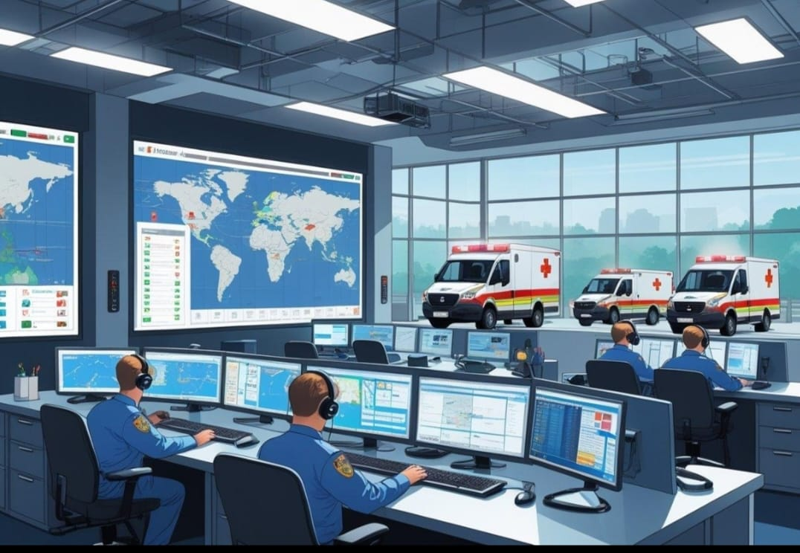

User
User
Emergency Services
Locate nearby hospitals, police stations, fire stations and other emergency resources instantly.

Categories
Hospitals
24×7 Emergency Care
Police
Nearby Police Stations
Fire Brigade
Fire Emergency Support
Medical Stores
24 Hour Pharmacies
Nearby Emergency Services
View AllFinding nearby emergency services...
Emergency Services Map
Interactive Map
Live map integration will display nearby hospitals, police stations and fire stations.